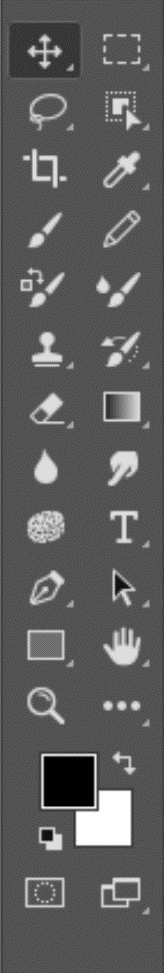

Belajar Photoshop
Langkah yang di lakukan dalam belajar dasar-dasar Photoshop
- Kuasai Tampilan Awal pada photoshop
- Kuasai penggunaan Tools bar
- Kuasai Fitur yang ada pada Options bar
- Mencoba membuat desain berdasarkan tutorial
- Membuat desain sendiri
1. Tampilan Awal (Interface)
Untuk awal belajar photoshop pemula sebaiknya mempelajari Menu Utama yang berada dibagian atas program Photoshop. Menu utama Photoshop diantaranya adalah File, Edit, Image, Layer, Select, Filter, View, Window dan Help.
| File | Digunakan untuk langkah-langkah awal dan langkah akhir dalam pengeditan foto, karena disana bisa memilih pilihan membuka lembar kerja baru, Impor foto, Browse, Open As, Close, Save, Save As, proses Print ke media cetak. |
| Edit | Digunakan untuk langkah-langkah pembantu pengeditan, karena disana ada pilihan Cut, Copy, Undo, Stroke, Paste, Free Transform, Fill, Clear dan masih banyak lagi yang lain. |
| Image | Mengolah foto sedemikian yang kita inginkan. Pilihan yang paling utama adalah Adjustment dimana bisa mengatur tingkat warna, kecerahan, exposure, kontras, maupun mengubah seluruh komposisi warna dengan beberapa pilihan seperti Equalize, Posterize dan lain-lain. Selain itu pengaturan rotasi dan ukuran foto juga terdapat pada menu Image, dengan pilihan Image Sizes dan Rotate Canvas. |
| Layer | Mengolah gambar baik itu dari warna, tingkat kecerahan, exposure, kontras dan lain-lain. Namun pengaturan pada Layer tersebut bukan untuk foto utama melainkan untuk lembar Layer. Banyak yang belajar photoshop pemula masih bingung akan fungsi dan cara menggunakan Layer. Pengertian Layer adalah sebuah object terpisah dari gambar utama (background) dan Layer-layer tersebut bisa proses tanpa menggangu object background maupun layer yang lainnya. |
| Select | digunakan untuk pengolahan select (memilih), baik itu dengan pilihan Select All, Deselect (membatalkan), Reselect (mengulangi), Inverse untuk mengganti bagian yang tidak terselect untuk terselect dengan metode yang hampir sama seperti Invert color, dan lain-lain. |
| Filter | mengolah foto untuk dirubah komposisi. Dengan fitur Extract dimana pilihan tersebut bisa digunakan untuk memisahkan warna yang berbeda. Selain itu pada menu Filter terdapat pilihan untuk memberi efek-efek pada foto menjadi Artistik, membuat foto samar-samar dengan efek Blur, memperhalus foto dengan fitur Reduce Noise, dan efek-efek lainnya. Menu Filter dapat juga digunakan untuk menaruh fitur plugin yang masih berhubungan. |
| View | digunakan untuk fitur tampilan, dengan yang utama adalah fitur Zoom in, Zoom out, Fit on Screen, mengatur Screen mode, Actual Pixel dan lain-lain. Menu ini dapat dipakai akses menggunakan tombol shortcut pada keyboard. |
| Windows | untuk mengatur apa saja kotak yang akan ditampilkan. Kami merekomendasikan kotak Layer, History dan Tools adalah yang terutama untuk ditampilkan. Atau akan lebih baik jika kotak Action juga ditampilkan apabila memilikinya. |
| Help | menu yang cukup penting untuk diakses yang berisi konten informasi tentang Photoshop serta fitur terbaru. |
Tampilan Awal (Interface)

File – New… (Ctrl+N) : Membuka lembar kerja baru

Halaman Lembar kerja baru

Bagian - bagian ruang kerja di photoshop
| Halaman Kerja | Tempat untuk melakukan proses editing gambar |
| Menu Utama | Bagian photoshop yang memiliki banyak menu dan berguna untuk membuat perintah (seperi New, Open, Save, dan lain sebagainya) |
| Tools | atau dikenal juga Tools Box adalah sebuah bar yang berisi berbagai macam tools dalam melakukan editing. |
| Options | Pengaturan lanjutan pada tool yang digunakan. |
2. Tools
Ada banyak sekali tool Photoshop yang tertera pada toolbox. Mungkin ini adalah yang paling sulit, menghafal logo tool dengan fungsi yang berbeda-beda. Namun jangan panik karena sebenarnya ada beberapa tool yang memiliki fungsi hampir sama, sebagai contoh untuk fungsi Select yang bisa dilakukan dengan Quick Selection, Magic Wand Tool, Lasso Tool, maupun Pen Tool. Hanya saja metode pengunaannya agak berbeda masing-masing
|  | Selection Tools | untuk melakukan seleksi pada objek di sebuah gambar (Lasso Tool, Magic Wand Tool, dan lain sebagainya) |
| Crop And Slice Tools | untuk memotong objek. | |
| Annotation, Measuring dan Navigation Tools | untuk memberi catatan, mengukur dan fungsi navigasi (Ruler Tool, Note Tool dan lain sebagainya) | |
| Painting Tools | untuk memberikan warna pada sebuah objek atau gambar (Paint Bucket, Gradient, Brush Tool dan lain sebagainya) | |
| Drawing And Type Tools | untuk menggambar dan menambah tulisan pada gambar (Pen Tool, Type Tool, dan lain sebagainya) | |
| Retouching Tools | untuk memperhalus, mengedit dan retouching pada foto (Smudge Tool, Blur Tool, dan lain sebagainya) |
Tutorial
Menu Open vs Place Embedded
Dalam tutorial ini, menunjukkan perbedaan antara membuka
gambar dan menempatkan gambar. Seperti yang akan kita lihat, baik perintah Open dan perintah Place
memungkinkan Anda memilih gambar dan membukanya dalam dokumen yang ada, yang memudahkan untuk
memadukan dua gambar bersama-sama!.
Cara Membuat Drop Shadow pada bingkai foto
Dalam tutorial ini, saya menunjukkan cara
menambahkan ruang kanvas dan bayangan jatuh ke gambar di Photoshop untuk membuat bingkai foto
sederhana namun bergaya. Kita mulai dengan membuat efek dasar menggunakan batas putih dan bayangan
hitam. Dan kemudian saya tunjukkan cara menyesuaikan efek dengan memilih batas dan warna bayangan
langsung dari gambar itu sendiri.